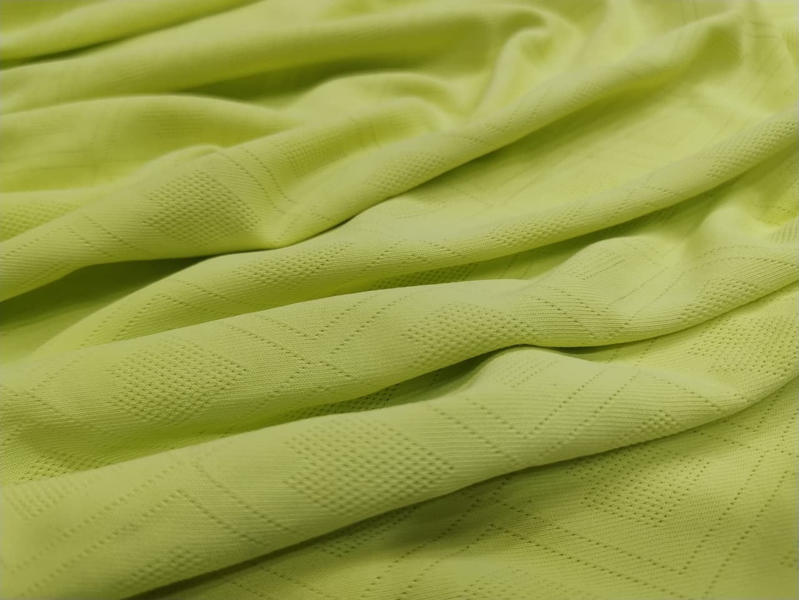

Our Fabric Catalogue
/MAROON 1.jpg)
DOT KNIT
Dot knit fabric features a soft, breathable structure with a subtle dotted texture, offering comfort, stretch, and a stylish finish—ideal for everyday and active wear.
View Details.png)
MICRO PP
Micro PP fabric is an ultra-lightweight, moisture-wicking material made from fine polypropylene fibres, designed for quick drying and superior comfort—ideal for active and performance wear.
View Details
RICE KNIT
Rice knit fabric features a unique grain-like textured pattern that offers softness, breathability, and durability, making it perfect for comfortable and stylish everyday wear.
View Details
NIRMAL KNIT
Nirmal knit fabric is a soft and smooth knitted material designed for everyday comfort, offering breathability and a pleasant feel against the skin.
View Details
SARINA
Sarina fabric is a smooth and durable polyester interlock knit with moisture-wicking and quick-dry properties, making it ideal for sportswear, uniforms, and everyday active use.
View Details
FOOTBALL
Premium quality sportswear/active wear.
View Details
CROWN KNIT
Premium quality sportswear/active wear.
View Details
BOX KNIT
Box knit fabric features a distinctive grid-like pattern with raised square textures, offering a unique look, enhanced breathability, and comfortable stretch—ideal for casual wear, activewear, and stylish apparel.
View Details
POPCORN KNIT
Popcorn knit fabric features a unique textured surface with raised, popcorn-like loops that provide enhanced breathability, superior comfort, and a distinctive visual appeal—ideal for casual wear, activewear, and stylish apparel.
View Details
JAQUARD
Premium quality sportswear/active wear.
View Details
REEBOK KNIT
Reebok knit fabric features a smooth, durable surface with a subtle texture, offering excellent breathability, moisture-wicking properties, and comfortable stretch—ideal for activewear, sportswear, and performance apparel.
View Details/1387b26b-dc42-4ff7-a494-432802a6e198.jpg)
SAP MATTY
Sap matty fabric is a durable and breathable polyester knit with a smooth finish, offering excellent color retention and comfort—ideal for uniforms, activewear, and everyday apparel.
View Details/064d21e3-4eda-4448-8d41-ab6ffec461c5.jpg)
SPUN MATTY
Spun matty fabric is a durable and breathable polyester knit with a smooth finish, offering excellent color retention and comfort—ideal for uniforms, activewear, and everyday apparel.
View Details
PC MATTY
Premium quality uniform fabrics.
View Details/525205c3-b4f8-4d6f-a06e-93d9eb4b6d0a.jpg)
AIRJET MATTY
Airjet matty fabric is a durable and breathable polyester knit with a smooth finish, offering excellent color retention and comfort—ideal for uniforms, activewear, and everyday apparel.
View Details
SPUN P KNIT
Premium quality uniform fabrics.
View Details
PC P KNIT
PC Knit fabric is a soft, breathable, and durable blend of polyester and cotton, offering comfort with enhanced strength and easy care—ideal for everyday wear.
View Details
SPUN FLEECE
Spun fleece fabric is a soft, warm, and durable material made from spun polyester fibers, offering a comfortable brushed texture with excellent insulation—ideal for winter wear.
View Details
PC FLEECE
PC Fleece fabric is a soft, warm, and durable material made from a blend of polyester and cotton, offering a comfortable brushed texture with excellent insulation—ideal for winter wear.
View Details
AIRJET FLEECE
Airjet fleece fabric is a soft, lightweight, and breathable material with a brushed surface, offering excellent warmth and comfort—ideal for winter wear.
View Details
THERMAL FLEECE
Thermal fleece fabric is a lightweight, insulating material with a soft brushed surface, designed to trap heat and provide warmth—ideal for thermal wear and winter clothing.
View Details
PC BIRDEYE
Premium quality casual wear fabrics.
View Details
CROCHET
Crochet fabric features a soft, breathabl e structure with a subtle dotted texture, offering comfort, stretch, and a stylish finish—ideal for everyday and ac...
View Details
INTERLOCK
Interlock knit fabric is a soft, stable, and versatile material with a smooth finish on both sides, offering excellent stretch, comfort, and durability—ideal for activewear, loungewear, and casual wear.
View Details
SINKER
Premium quality casual wear fabrics.
View Details
LOOP KNIT
Loop knit fabric is a soft, breathable, and durable material with a unique looped texture, offering excellent stretch, comfort, and moisture-wicking properties—ideal for activewear, loungewear, and casual wear.
View Details
WAFFLE
Premium quality casual wear fabrics.
View Details
ZARA KNIT
Zara knit fabric is a soft, breathable, and durable material with a unique looped texture, offering excellent stretch, comfort, and moisture-wicking properties—ideal for activewear, loungewear, and casual wear.
View Details
KETONIC
Premium quality casual wear fabrics.
View Details